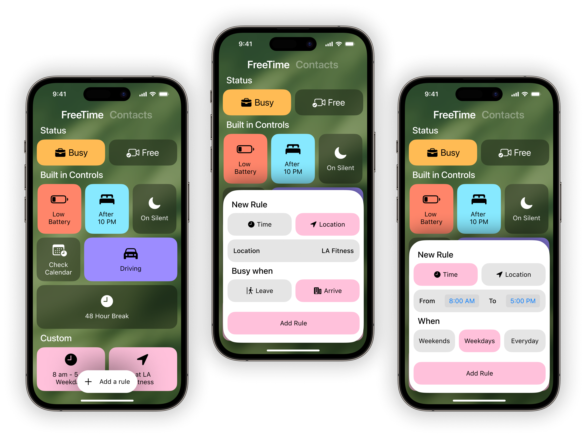

Free to FT
Catch up like before.
Are you free?
Are you free?
Designed for Sponteniety.
Free To FaceTime makes catching up with a distant loved one a breeze. Know exactly who’s free to call and who’s free later. Never forget that weekly call to mom. And personalize your contacts with moving photos, video, and more like never before on iPhone.
Available 12.25
Free to FaceTime
See who’s free at a glance
Connect with your friends instantly
Friendly reminders right in the quick call search field
Tap their face for call history and custom photos

Design
"Home" prioritizes one key function: telling you who's free. Contact sizes distinguish between those who are free and those who are busy. For free friends, a prominent FaceTime button sits right where your fingers naturally rest.
FTF was built for those special 5-10 loved ones. And they should recieve the same fanfare as movie posters.
FTF was built for those special 5-10 loved ones. And they should recieve the same fanfare as movie posters.
Why we forget to call
Interviews and focus groups with 31 participants unveiled common obstacles to connect, including forgetfulness, limited free time, and the desire not to burden busy loved ones.
Many participants revealed that they often gave up reconnecting with friends after just four missed calls, leading to a cycle of diminishing contact, particularly when significant life changes occurred.
Many participants revealed that they often gave up reconnecting with friends after just four missed calls, leading to a cycle of diminishing contact, particularly when significant life changes occurred.
Personalize your contacts
Set reminders which nudge you when you’re both free.
Add alternating photos to teleport you back when there wasn’t so much distance.
See how often you miss calls on the call log.
Notifications
SameTime reminders and frequency ones too.
Don't worry, they're used sparingly.

Design
Reminders should be a bit more clever than your run-of-the-mill reminders app.
Adjust the reminder frequency to align with your specific needs. And two types of notifications: "SameTime" and "Frequency," imagine the foundation of a rich, clever notification system.
Adjust the reminder frequency to align with your specific needs. And two types of notifications: "SameTime" and "Frequency," imagine the foundation of a rich, clever notification system.
Not every relationship
Needs a weekly catch-up. Research indicates that many relationships naturally fall into weekly, biweekly, or monthly rhythms.
Some individuals resort to scheduling calendar events or setting alarms as a reminder to call, but this approach only proves effective if both parties are available.
Some individuals resort to scheduling calendar events or setting alarms as a reminder to call, but this approach only proves effective if both parties are available.
FreeTime
Set your availability to change automatically
Adjust availability based on battery status, calendar events, or when you're on the road

Design
FreeTime offers just the right level of customization
Apply restrictions based on location or time, or just use default controls. Plus, it seamlessly integrates with Google Calendar.
Apply restrictions based on location or time, or just use default controls. Plus, it seamlessly integrates with Google Calendar.
Selected for sponteniety
Research showed people valued spontaneous calls more than scheduled ones.
While professional solutions exist for call syncing, the experience can feel too impersonal for your most cherished relationships. Custom photos and wallpaper helps FTF stay familiar and personal.
While professional solutions exist for call syncing, the experience can feel too impersonal for your most cherished relationships. Custom photos and wallpaper helps FTF stay familiar and personal.
Make it yours
Contact posters support live photos and video.
Like magic.
Like magic.

Lessons Learned
It's okay to remix
"Great artists steal," but I like "Reduce, Reuse, Recycle."
The home interface seamlessly incorporates elements from Flighty, embraces the free-flowing horizontal swipe found in iOS app switching, mirrors the profiles seen on Apple Music album pages, draws upon the photo picker inspired by Retro, and maintains an overall aesthetic reminiscent of Home on iOS.
The home interface seamlessly incorporates elements from Flighty, embraces the free-flowing horizontal swipe found in iOS app switching, mirrors the profiles seen on Apple Music album pages, draws upon the photo picker inspired by Retro, and maintains an overall aesthetic reminiscent of Home on iOS.
A mind that renders
Every element demands power, not only from your device but also from your mind. Exercise care in what you present to the eyes.
An interface should fit the variability of people. FTF is designed for both quick, on-the-go glances and leisurely, couch-bound gazes. Each element carries intention and purpose, defending its render well.
An interface should fit the variability of people. FTF is designed for both quick, on-the-go glances and leisurely, couch-bound gazes. Each element carries intention and purpose, defending its render well.
Getting to "Home"

Getting to FreeTime

 Values
Values
 Work
Work
 About
About
 Audio
Audio